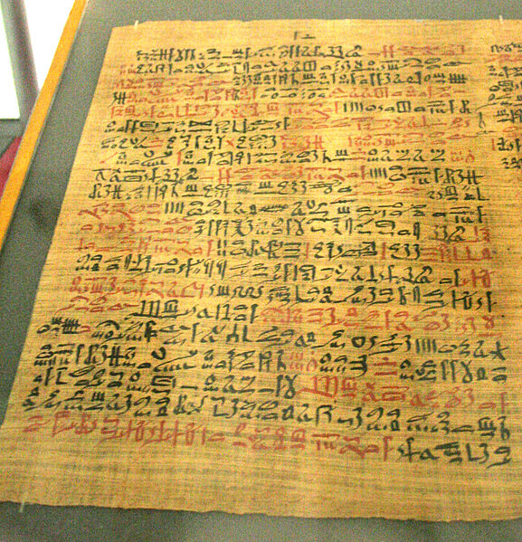

One of the big starting point for science was ancient Egypt. Some conributions include, medicine and math.
Another cornerstone of science is Mesopotamia. some controbutions include astronomy & medecine.
Source: Authors, Multiple. “History of Science.” Wikipedia, Wikimedia Foundation, 2 May 2024
On the other hand, during the midddle ages science was reborn into the modern science we know today. Large contributions to this change include Copernicus & the Italian Renaissance.
Source: Hooykaas, R. “The Rise of Modern Science: When and Why?” The British Journal for the History of Science 20.4 (1987): 453–473. Web.